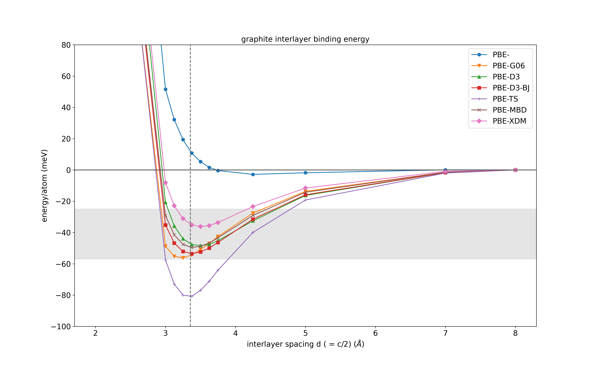

Interlayer binding energy of graphite
Here we'll explore the van der Waals interaction that holds sheets of graphene together to form graphite. We will see how a standard semi-local density functional approximation fails to predict the correct interlayer binding energy in graphite and how we can do better using semi-empirical dispersion corrections in CASTEP.
For this tutorial we will use the CASTEP-ASE interface to setup and run many short calculations and analyse the results, though you can of course adapt the content here to use a scripting language of your choice. I have broken up the parts of the script to add clarification in places, but you can download the jupyter notebook with all the cells here.
We start by importing several python libraries. For more information on using the atomic simulation environment (ASE) with CASTEP, see the documentation here.
# ASE version 3.22.1
from ase.io import read, write
from ase.calculators.castep import Castep
from ase.io.castep import read_seed
from ase.visualize import view
# pandas version 1.3.4
import pandas as pd
# castep.mpi on path already, version 21.11
castep_cmd = 'mpirun -n 4 castep.mpi'
# plotting
from matplotlib import pyplot as plt
%matplotlib inline
# Python version: 3.9.5
For this tutorial I will use CASTEP version 21.11. See here for a list of the different dispersion correction schemes and which version of CASTEP they are available from.
Separation of layers: setup and run the calculations
The script below loops over several different dispersion corrections schemes and, for each one, calculates the total energy of a 4-atom graphite cell at several different values of the c lattice constant. This effectively increases the interlayer spacing between the sheets of graphene. By separating them far enough apart, we can estimate the interlayer binding energy predicte by each method.
The script took about 10 minutes to run using 4 cores on a relatively powerful laptop. You can decrease the k-point sampling or basis set precision, or loop over fewer methods or c parameters in order to speed things up.
# run in this directorsy
directory = 'separate-layers-tutorial/'
# k-point grid
# -- try coarser grid if this is too slow,
# but higher if you want more reliable results!
kpts = [13,13,5]
# xc functional to use
xc = 'PBE'
# range of unit c parameters in Angstroms (interlayer spacings are half these!)
crange = [4, 5, 6, 6.25, 6.5, 6.75, 7, 7.25, 7.5, 8.5, 10, 14, 16]
#SEDC correction schemes to try:
schemes = ['', 'G06', 'D3', 'D3-BJ', 'TS', 'MBD', 'XDM']
# pandas dataframe to store the results
df = pd.DataFrame({'crange' : crange})
# loop over the different correction schemes
for sedc_scheme in schemes:
print('\n',50*'=')
print(f'{xc} + {sedc_scheme}\n')
# list to temporarily hold the total energy for each calculation
energies = []
# loop over c parameters:
for c in crange:
label = f'{xc}-{sedc_scheme}-{c:3.2f}'
try:
graphite = read_seed(directory+label)
except:
# if the calculation doesn't already exist, we set it up and
# run it
# read in cif file (taken from here: https://materialsproject.org/materials/mp-48 )
graphite = read('C_mp-48_primitive.cif')
# we could make a supercell to get more accurate results for TS, MBD and XDM schemes.
# graphite = graphite * (3,3,1)
# scale c parameter to new value
cellpar = graphite.cell.cellpar()
cellpar[2] = c
graphite.set_cell(cellpar, scale_atoms=True)
# set up castep calculator
calc = Castep(xc = xc,
kpts = kpts,
label = label,
castep_command = castep_cmd,
basis_precision = 'precise', # switch to something cheaper (e.g. FINE) to speed things up for this example..
directory = directory,
write_checkpoint = 'None', # don't need the checkpoint files now
write_cst_esp = False, # don't need the electrostatic potential file now
write_bands = False, # don't need the bands file now
_rename_existing_dir = False, # allows us to write all these calculations to the same directory...
symmetry_generate = True, # use symmetry to speed up the calculation
snap_to_symmetry = True, # enforce symmetry
)
# Switch on the SEDC flags
if sedc_scheme != '':
calc.param.sedc_apply = True
calc.param.sedc_scheme = sedc_scheme
# For the XDM scheme we need to set this manually
# otherwise the calculation crashes...
if sedc_scheme == 'XDM':
calc.param.SEDC_SC_XDM = 1.0
graphite.set_calculator(calc)
e = graphite.get_potential_energy()
energies.append(e)
print(f'{c:8.3f} A\t {e:12.8f} eV')
# save the energy wrt to furthest energy:
energies = [e - energies[-1] for e in energies]
df[f'{xc}-{sedc_scheme}'] =energies
# Save to a .csv file:
df.to_csv('graphite_layer_separation.csv')
The .param files generated look something like this:
WRITE_CST_ESP: FALSE
WRITE_BANDS: FALSE
WRITE_CHECKPOINT: None
XC_FUNCTIONAL: PBE
SEDC_APPLY: TRUE
SEDC_SCHEME: D3 # or TS or D3-BJ etc.
BASIS_PRECISION: precise
The task defaults to SINGLEPOINT (which is what we want in this case).
The .cell files simply have the crystal structure in which the cell is scaled in the c direction.
Read in and analyse the results
We can now read in and analyse the results from the previous step. Reading the data into a pandas dataframe object is convenient.
df = pd.read_csv('./graphite_layer_separation.csv')
# scale by 1000 / 4 to get the energies per atom and in units of meV
dfdiff = (df.iloc[:,1:]) * 1000 / 4 # energy per atom in meV
# the c parmeter is 2x the interlayer spacing, d
dfdiff['c/2'] = df['crange'] / 2
styles = [f'{m}-' for m in ["o","v","^","s","+","x","D"]]
# compared to this refence (and many others!) https://doi.org/10.1039/C3RA47187J
ax = dfdiff.plot(x='c/2', y=['PBE-','PBE-G06', 'PBE-D3', 'PBE-D3-BJ', 'PBE-TS', 'PBE-MBD', 'PBE-XDM'],
ylabel='energy/atom (meV)',
ylim=(-100, 80),
xlabel=r'interlayer spacing d ( = c/2) (${\AA}$)',
figsize = (16,10),
style = styles,
)
ax.axhline(0, color='0.3')
ax.axvline(3.355, ls='--', color='0.4')
# Experimental binding energies reported shown in the figure are 31 ± 2, 43, 52 ± 5 and 35 (+15 to –10) meV per atom
ax.axhspan(ymin=-57, ymax=-25, color='0.8', alpha=0.5)
ax.set_title('graphite interlayer binding energy')
plt.savefig('graphite-interlayer-binding-castep-dispersions.png')
which produces the following figure:

where the dashed vertical line is the experimental interlayer spacing and the shaded grey region is the range of experimentally obtained interlayer binding energies. Please note that these are not fully converged calculations and so do not represent the actual performance of these methods but is simply a guide for how to use them with CASTEP.
We can see that the plain PBE functional severely underestimates the binding energy of graphite and that many of the dispersion-corrected results are in much better agreement. The TS scheme strongly overbinds graphite, but has been found to be accurate for other types of systems. Testing such methods carefully is always required when you encounter a new system.
Further suggestions
-
CASTEP writes out a warning for the TS, MBD and XDM schemes about the unit cell being too small for accurate corrections. Try repeat the above calculations for these three methods using a larger supercell to see what the effect is and what sized supercell you would need to converge the dispersion correction.
-
For the D3 and D3-BJ methods, try to switch on the three-body interaction term by setting:
%BLOCK devel_code d3_threebody TRUE %ENDBLOCK devel_codein the .param file. What effect does this have on the interlayer binding energy in graphite? (You may also want to set
IPRINT = 2to see more information about the dispersion correction parameters.) -
Compare to other XC functionals with and without the dispersion corrections (though note that of the corrections are only parameterised for a few functionals.)